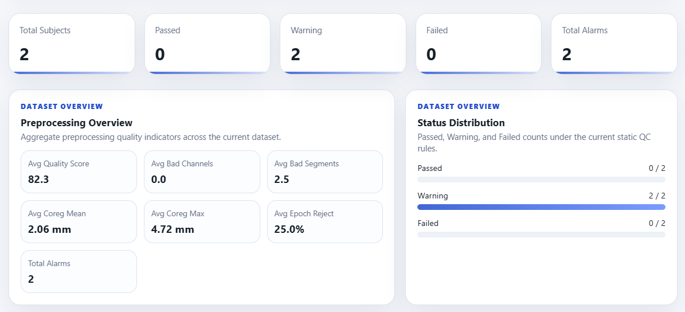
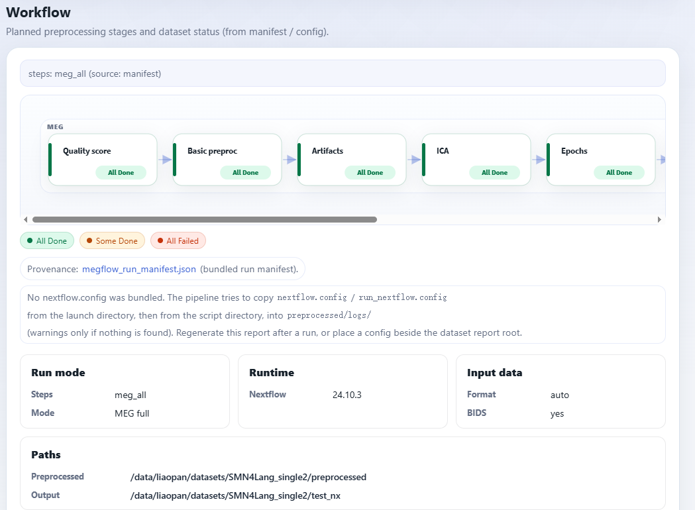

MEGFlow Documentation#
MEGFlow is a reproducible Nextflow pipeline for large-scale MEG preprocessing, built on MNE-Python and designed for containerized local, cluster, and corpus-scale workflows.
It provides configurable continuous preprocessing, automated artifact detection, ICA-based cleaning, task or resting-state epoching, MEG-MRI coregistration, source reconstruction, and static quality-control reports.
Container, Apptainer/Singularity, and local source installation paths.
Run your first dataset with default settings and inspect the report.
Step-by-step execution order, branch conditions, inputs, and outputs.
Formal nextflow.config reference with parameter meanings and defaults.
Core Capabilities#
Docker and Apptainer/Singularity workflows keep runtime environments consistent across workstations, servers, and clusters.
Filtering, notch filtering, resampling, Maxwell filtering, artifact detection, ICA, epoching, and source settings are configured in one file.
Bad channels, bad segments, ICA components, coregistration distances, epoch rejection, NormMEG-QC outputs, and workflow completeness are summarized for review.
The continuous preprocessing core is task independent, while optional epoching supports fixed-length resting windows, trigger events, or BIDS event files.
FreeSurfer or DeepPrep outputs can be reused or generated before BEM, coregistration, forward modeling, and source reconstruction.
Static HTML reports bundle subject pages, figures, sidecars, CSV files, JSON summaries, workflow metadata, and the effective config snapshot.
Report Preview#
MEGFlow reports are designed to support dataset-level triage first, then subject-level review and interactive edits when needed. See Reports for the full static and interactive report tour.

Aggregate NMDQ scores, bad-channel and bad-segment counts, coregistration metrics, epoch rejection, and alarm totals.

The selected steps mode is rendered as a stage diagram from the run
manifest and effective configuration.